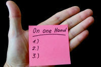

Conjuncts (or conjunctive adverbs)
The term conjunct is variably used by grammarians but most will
include conjunctions as a special form of conjunct. You may
also find these forms referred to as conjoins.
Another common way to describe the role is as a conjunctive adverb.
That makes sense, because they are adverbs and the act in a
conjunctive fashion. We'll stick to
the more common conjunct in what follows.
This guide mostly concerns conjuncts which are not
conjunctions, although it will often contrast them and see how
conjuncts and conjunctions co-occur. There is a separate guide on this site to
conjunctions, linked in the list of related guides at the end, which considers matters of coordination,
subordination and correlation and there are also separate guides to
subordination and coordination which contain more detail.
Conjuncts form a class of adverbials, the other three being adjuncts, disjuncts and subjuncts. If you need to place conjuncts in that context, you may find it helpful to look at the general guide to adjuncts, conjuncts, subjuncts and disjuncts on this site, linked in the list of related guides at the end.
 |
The difference between conjuncts and conjunctions |
Although we have already noted that conjunctions are a class of conjuncts, it is important now to get the distinctions clear because what follows will be difficult to understand until that is done.
Look at these four and focus on the bits in black.
- I was very late so I had to run to catch my train.
- I came late. Therefore, I missed his introduction.
- He is being obstructive and he isn't helping.
- He is being rude. Moreover, he isn't helping.
What happens if you remove the bits in black? Click here when you have an answer.
- I was very late so
I had
to run to catch my train.
If you remove the bit in black here, you get an ungrammatical sentence (called a run-on sentence, by the way):
*I was very late I had to run to catch my train
If you want to avoid that, you have to split the sentence into two parts.
I was very late. I had to run to catch my train
You then lose some of the sense of the result of being late although a sympathetic listener can make the connection. - I came late.
Therefore,
I missed his introduction.
In this, removing the bit in black does not produce anything ungrammatical although some sense is lost. - He is being obstructive
and he isn't helping.
If you remove the bit in black, you get an ungrammatical sentence (another run-on sentence):
*He is being obstructive he isn't helping
You also lose some sense of the addition of the two behaviours. - He is being difficult.
Moreover,
he isn't helping.
Removing the bit in black leaves two perfectly grammatical sentence but, again, you lose the sense of the additional sense.
In 1. and 3. we have two types of
conjunction.
2. and 4. express similar concepts but they contain
conjuncts, not conjunctions.
The test is: are the expressions an
integral part of the sentence or not?
If they are, you are dealing
with conjunctions, if they are not, you are dealing with conjuncts.
To check if you can distinguish between a conjunct and a conjunction, try this test.
If you got all those right, it's safe to move on.
 |
The difference between conjuncts and adjuncts |
As you will know, if you have followed the general guide to
adverbials, adjuncts are integral to the clause in which they occur.
So, for example, in:
I called on John but
unfortunately he was out at work
we have the adjunct adverbial unfortunately which is
integral to the second clause. It does not act to link the
clauses because there is no logical connection between them.
We can, therefore, have a perfectly understandable clause such as:
Unfortunately, John was out at work
However, in:
I called on John and I telephoned him
as well.
we have a conjunct, as well, reinforcing the additional
event.
We cannot, in this case, have a standalone clause as:
I telephoned him as well
because it presumes the first clause.
Some words can act in both ways and that can cause some
confusion. For example, in:
He wanted an explanation and we, too, were
keen to know why it had happened
the role of too is simply as an adjunct, concerning the
second clause. The conjoin in this case is the conjunction
and.
But in:
They take their spring holidays in France. They
take a cruise once a year, too.
the word too is acting as a conjunct and could be replaced
by, for example, furthermore, and what's more, to boot or
in addition.
Whether you choose to analyse something as an additive adjunct or
a reinforcing / additive conjunct is often a matter of emphasis.
This somewhat technical difference is not one with which to trouble
learners but it is quite important to know what function words are
performing. See, too, below, the discussion of syntactical homonymy.
 |
The form of conjuncts |
All conjuncts are a form of adverbial but they are not all adverbs. Here's a short list of the various forms that conjuncts may take:
- Adverbs
These are the most frequent form. Examples are:
He has spent all his money. Besides, there is nothing he really wants to buy.
He has lots of money. However, there's nothing he wants to buy.
The train was late. Additionally, it was overcrowded and uncomfortable.
We waited forever in the rain. Eventually, the train turned up. - Prepositional phrases
These are generally slightly more formal alternatives to simple adverbs and can be formed from them providing there is an available noun to function as the complement of the preposition. Examples are:
There is snow forecast. In addition, it's going to be windy.
There is snow forecast. Notwithstanding the weather, we are taking the trip.
The trains here are rarely late. By contrast, they are always late in my country.
She came late. In consequence, she missed the chairman's introduction
There is no noun available from the adverbs eventually or subsequently so no prepositional phrase alternative can be constructed. (There is a noun, eventuality, but it concerns a possible event or outcome.) - Finite clauses (often conditional or contingent)
The train was late. If it hadn't been, I would have been early.
I'll leave soon. Unless I do I'll miss my train. - Non-finite verb forms are used but less commonly
It will snow tomorrow. Taking that into account, we'll leave a bit earlier.
It's a shambles. Better put, it's irreparable
To sum up, the situation is a bit difficult
That said, it's going to be a better result than last year - Even less commonly and formally, demonstrative pronouns
exhibit conjunct-like behaviour although they are not adverbial;
they are pro-forms. For example:
John wanted evidence of progress. That I could not find.
Why don't we go out for dinner. That I would enjoy.
She stays out till all hours. This her father will not tolerate.
He tells me the paint is here. This I cannot see.
She pointed out her new shoes. Those I did not like.
Here are the old tools he gave me. These I do not use.
Only that and this can be used to refer to a clause, incidentally, as in the second and third examples, because, by their nature, clauses are singular. Even when reference is to more than one clause, these and those are not used, so. e.g.:
Why don't we go out, see a film and have dinner in town later? That I would enjoy.
is allowed, but
Why don't we go out, see a film and have dinner in town later? *Those I would enjoy.
is not.
 |
Syntactical homonymy |
Some words and phrases exhibit this phenomenon and can act as
conjuncts in certain settings, as conjunctions in others and
prepositions in other environments. For example, in:
Notwithstanding his objections, I am determined to
do it.
the word is acting as a preposition, but in:
He objects.
Notwithstanding, I am determined to do it.
the word is acting as an adverb and a conjunct, although
nevertheless would be a more common choice, and in:
Notwithstanding
that he objects, I am determined to do it.
the word is acting as a subordinating conjunction.
What this means is that we have an case of categorical
indeterminacy: we do not know, just by looking at it, whether the
item in question is a conjunct or a simple prepositional phrase.
Adverbs, too, of course, are not always conjuncts affecting the
whole of the second clause and linking it to the first.
Sometimes, they function to modify only the verb phrase of which
they are part and are simple adjuncts. For example, in:
John eventually told me
the truth
Mary certainly believed him
They initially forgot to pay
the adverbs are operating as adjuncts modifying the verbs in the
usual way.
They also modify adjectives and other adverbs, too, of course, so in:
John was obviously
tired
He argued rather fervently
for the idea
She was still
unhappy
the adverbs are modifying adjectives and adverbs, respectively.
However, in:
We can't wait forever.
Eventually, we
will have to make a decision
We have to start somewhere.
Initially, we need a plan of action.
She was poor.
Still, she spent her money freely.
the adverbs are functioning as conjuncts, linking the clauses.
How they are doing that is described below.
This phenomenon is even more marked in the case of disjuncts, to which there is a separate guide linked in the list of related guides at the end.
 |
A note on intonation |
Conjuncts are frequently written rather than spoken but they are
used in oral communication, and a few, as we shall see, are almost
confined to spoken language.
The intonation on the conjunct, whether a single word or a phrase,
or even a finite clause, tends to be a rise-fall to indicate its
importance. Like this:

If you are going to practise using conjuncts in spoken language, this is worth some attention so that people are producing a natural intonation contour.
 |
Combining conjunctions and conjuncts |
So far, an effort has been made to keep things separate and
clear. However, it is quite common to find both conjunctions and conjuncts
occurring in tandem. This can confuse learners because the
conjunction often serves a different purpose from the conjunct and
the reader or hearer needs to combine the notions to get the full
meaning.
For example:
- coordinating conjunction + conjunct
- He came with most of his family and,
additionally, with a number of friends
in which the clauses are connected with the coordinator and with the conjunct, additionally, serving to emphasise the additive nature.
She's not very hard working but, that said, she is good at what she does
in which we have an adversative coordinator, but, and a concessive conjunct, that said. Both senses are encoded in the sentence. - subordinating conjunction + conjunct
- They made too many mistakes because, for a
start, they didn't check the figures and, secondly, because they
didn't get the maths right
in which we have the causal subordinating conjunction because used twice, a coordinating conjunction, and, and a listing and enumerative conjunct, for a start and secondly in the same sentence.
He was happy with the work whereas I, however, did not think it was good enough
in which we have a contrastive subordination conjunction, whereas, and a concessive conjunct, however.
 |
The functions of conjuncts |
There are as many ways of classifying what conjuncts do as there
are authorities writing about them. The following is not
intended to be an original contribution to the discussion and you
will see that some of the categories overlap (or are contiguous).
For teaching purposes, however, they are helpful in terms of
planning what to teach so that you are focusing on a limited range
of concepts in a lesson. Mixing up lots of different functions
when teaching the area is a sure way to confuse your learners.
All conjuncts function to join independent clauses. That is to say, they coordinate rather than subordinate. However, how they do that and the nature of the connection between ideas is variable.
 |
Listing |
Listing conjuncts imply that what is being said forms
part of a series. The simplest way of doing this in
English is by the use of commas but certain conjuncts perform
this function and emphasise the fact that we are dealing with a
list. Examples are:
For a start, you are late.
To begin with,
you forgot to bring the right tools.
At the outset, you
brought the wrong materials.
As if all that
wasn't enough, you want to leave early.
 |
Enumerative |
When listings are ordered, a number of other conjuncts are
possible. For example:
Firstly,
we need to set out what we want.
Then we can
make the calls.
Finally we
can list the responses.
In the first instance,
we'll gather some data.
Then, we'll
do some number crunching.
Next, we'll
have to write the report.
At the end,
it'll be quite satisfying.
For obvious reasons, enumerative conjuncts often appear in
tandem with an initial listing conjunct.
These sorts of conjuncts are often referred to as sequencers and
that is a familiar way of talking about them. They are
sequencers but they are also conjuncts.
 |
Additive / reinforcing |
Closely connected to the ideas of listing and enumerating is the category of
additive conjuncts which often perform a reinforcing function,
making the connection more forceful. These are common and
commonly taught. Examples are:
He is late.
In addition, he has forgotten his
notes.
We have completed the project.
Furthermore,
we have written up the report.
She is on holiday. Her secretary is
as well.
The weather's getting chilly.
Moreover, the forecast is for snow.
The work is essential.
Additionally, it's urgent.
He lost his way.
Into
the bargain, he had forgotten to bring a map.
She was rude to the manager.
What's more, she was wrong.
He has no work and no hope of getting any,
to boot.
He came with some friends and he brought his sister,
too.
The conjuncts
too and as well can only occur at the end of a clause and
that is unusual because most conjuncts are conventionally
initial. It leads to errors such as
*He was late. He
as well lost
his notes.
*He was late.
As well
he lost his notes.
*He was late.
Too,
he lost his notes.
Other constructions which perform an additive function can be
placed initially, in medial position or terminally:
It's cold. It's very windy,
moreover.
It's cold. It is,
moreover, very windy
etc.
An oddity with the adverb
too is that it can function
to modify a noun phrase but it still has its additive function.
For example:
She loves parties and he,
too, is quite happy to go to them.
and here the word is functioning as an adjunct modifying the
pronoun, not a conjunct.
Additive conjuncts often occur in tandem with additive
conjunctions and play an amplifying role so we see, for example:
The weather's getting chilly, and,
moreover, snow
is the forecast.
There is a good deal of stylistic variation with additive conjuncts, some being quite formal, others confined to informal speech and very informal writing. In the first category we find furthermore, moreover and in addition. In the second category, we find what's more, to boot and into the bargain. Others are more neutral in tone.
 |
Exemplifying |
A couple of prepositional constructions serve to introduce
examples linked to a preceding statement. For example(!):
There are lots of pleasant places to go. The pier
is one, for example.
He is often a bit rude.
For instance, he just demanded his
coffee this morning.
There's a lot of things I would like.
Such as a
having new
car.
There's a lot to be said for it.
As an example,
it's quite light and portable.
The prepositional phrases
for example and for
instance can occur initially, in medial position or
terminally. The expression such as can only
appear initially.
Appositional / Rephrasing / Correcting / Inferencing |
Apposition refers to the fact that the topic is common to
both clauses. For example:
This has gone horribly wrong.
In
other words, it's a disaster.
He's not the man for the job.
By which I mean we should
re-advertise the position.
She won't be at work for a week or so.
That is to say,
you need to find someone else to do this.
A sub-group of this category are conjuncts used to rephrase
or slightly correct what has been said or written and it is sometimes impossible
(and rarely necessary) to separate the functions. For
example:
It's working off and on.
Better
put, it's an intermittent fault.
He's not coming.
Rather, he can't come until later.
The last example could also be classified as a concessive
use.
A further subset occurs in dialogue and signals an inference made
by the second or subsequent speaker. For example:
I'm afraid I can't come.
In other words, you don't
want to
or
My car's in the workshop
In that case, I'll take
the train
The conjunction or is often seen in tandem with these
conjuncts so we may have, e.g.:
She's not happy with the work or
rather she
wasn't pleased at first
Summative |
These conjuncts refer to a summation or conclusion.
They all imply something like:
it follows from
what has been said / written / achieved / done
For example:
He is not answering the door or his
phone. I conclude
he is unwilling to talk.
In conclusion,
let me highlight the main points.
So, where
have we got to?*
To sum up,
that's the situation we face.
In a nutshell,
the work will be expensive and long lasting.
To cut a long story short,
the holiday was not what we expected.
For semantic reasons, the conjunction
so is often found in
tandem with summative or conclusive conjuncts so we get, e.g.:
So,
to sum up,
that's the situation
So,
I deduce
that this is the wrong part
*See below for a short discussion on the meaning of
so
as a conjunct (summative) and as a conjunction (resultative).
 |
Resultative / Causal |
This is a common category and conjuncts are frequently used
to express outcomes. For example:
He came late.
Consequently,
he couldn't get a ticket.
She arrived early.
Therefore, she found a seat.
The power was out.
As
a consequence, I couldn't check my emails.
There was heavy rain overnight.
As a result,
the road was impassable.
The figures were wrong.
In view of that, she decided to
recalculate the forecast.
The train was badly delayed.
Accordingly, I was late to the
meeting.
These conjuncts appear frequently with additive and
resultative conjunctions as in, e.g.:
She was late and
consequently
couldn't get anything to eat
The network was down so,
as
a result, all contact was lost with the customer
|  |
Contrastive |
There are three sub-sections of this category in this
analysis (but not in all as some of these are elsewhere
considered separate categories). For example:
- Replacing:
We can meet at the pub. Alternatively, you can come to my place.
Come for dinner. Or, if you prefer, lunch.
She didn't go to the dance. Instead, she got on with her studies.
We can go to the park for a picnic. Otherwise, we could get a snack at the station.
I need to save more. Or else, I'll be both old and poor.
The conjunction but occurs frequently in combination with replacing conjuncts as in, e.g.:
Come and have lunch but if you prefer, have some dinner
She didn't attend much but instead had a good time out with friends at university - Antithetic (i.e., expressing the opposite meaning):
He's no genius. On the contrary, he seems a bit slow.
That's not fair. In fact, it's grossly unjust.
That's not the best way. Quite the opposite, it's slow and unreliable.
He isn't poor. Indeed, he was left a lot of money by his mother.
She isn't unfriendly. Quite the reverse, she's always very approachable
Because of their meaning, these conjuncts rarely appear with any conjunctions. - Concessive (indicating that the content of
clause 2 is still valid despite the content of clause 1):
He's very sure of himself. Still, he has a right to be, I guess.
It's raining. All the same, I'll take the dogs out.
She arrived late. However, it didn't matter.
It was raining. Nevertheless, we enjoyed the day out.
They may not arrive at all. At any rate, they'll be very late.
This has been a tough year. That said, the results are surprisingly good.
I've spent too much this month but, anyway, I'm taking her out for an expensive lunch.
The conjunct anyway can also have a subject-switching function (see below).
Concessive conjuncts, again because of the meaning they carry, often occur with the conjunctions but and or as in, e.g.:
It was a long day but, nevertheless, the children enjoyed themselves
He'll be here, or, at any rate, he'll do his best to come
 |
Equating |
Conjuncts often suggest that two things are of equal
significance. For example:
I don't want to eat here.
Likewise, I'd
avoid that restaurant over there.
He is a talented musician.
Similarly, his sister shows promise.
The main course was excellent.
Equally, the
service was very attentive.
The information is complex and difficult to understand.
By the same token,
it is full and informative.
The conjunct too is used in this function but,
unusually, is normally placed after the second clause or may appeal
medially as in, e.g.:
The children were allowed to go home early.
The staff were, too.
The system was very effective. It was,
too, quite efficient.
For semantic reasons, equating conjuncts are often see with
the additive coordinator, and, as in, e.g.:
He has many friends and,
similarly, his
sister is popular
Because it's difficult to fix it will be expensive and,
by the same token,
it'll take a little time
 |
Transitional: switching the subject |
This function is frequent in spoken language but almost
non-existent in written language except of the most informal
kind. An exception is the use of the adverb
incidentally which is sometimes found in quite formal written
texts.
These are sometimes called subject-switching conjuncts.
For example:
I'm going into town.
By the way,
did you ever see Mary about the car?
That's her sister.
As
an aside, her brother's told me she is leaving
the country.
I'll see you tomorrow.
Come to think of it, is your brother in
town?
That's a pity.
Anyway,
what are we doing this evening?
OK. That's decided.
Now, what's the next item?
The function of these conjuncts is not usually to switch
topic completely but to enter on a parallel track so we do not
find:
*It's a pity the film was so poor.
Anyway, there's a full moon next Thursday.
because that is incohesive and incoherent.
The topic to which the speaker wishes to divert is often closely
connected to the current topic.
The function of
anyway is often a signal that a speaker
wishes to return to a previous topic after an aside. It
may also have a concessive function (see above).
 |
Temporal |
This category is missing from some analyses but is quite
common although limited in terms of the exponents. For
example:
He spent the day gardening.
Meanwhile, I
just sat around and read.
He was born in Britain and retired to Germany.
In the meantime,
he spent many years in France.
I have a meeting at 9 and another at 3.
In the interim,
I don't have much to do.
He lived in many countries.
Eventually, he settled in America.
She revised the figures carefully.
Later, she
presented the new data to the team.
The coordinators
and and but are
frequently used in tandem with these conjuncts as in:
He was born in Britain and retired to Germany,
but, in the meantime,
he spent many years in France.
I have a meeting at 9 and another at 3 and
in the interim,
I don't have much to do.
The examples given above do not, of course, cover all possible realisations of conjuncts in English. A longer list, which is still not exhaustive, is available in PDF format here.
The cut-out-and-keep summary looks like this:
Theme and rheme |
By their nature, conjuncts are ideal cohesive devices to maintain
theme-rheme structures in both writing and speech (more usually the
former).
If the concept of theme-rheme coherence is unfamiliar to you, there
is a guide on this site, linked below. Here it will suffice to
say that the theme is the subject or main participant in a clause
and the rheme is all that follows. The rheme is often taken up
immediately or at a later stage in a paragraph or longer spoken turn
to become the theme of the next clause and so on.
To exemplify, here is a slightly adapted company memo:
After consultation with department
representatives, a new company working policy will soon be
implemented. Accordingly, everyone will be enabled
to do a number of things. Firstly, flexi-working
will be permitted. Consequently, this means that,
providing your work is not affected, you will be able to come to
work and go home at any time between 8 am and 9pm. Of course,
the hours one spends at work will be unchanged. However,
more individual flexibility is allowed. For example,
if you wish, you can work for 10 hours a day for four days and have
a 3-day weekend. Alternatively, you may prefer to
work two half days every week and spread the work over six days.
Secondly, everyone will be able to access the
server from home, providing they have a secure terminal.
Therefore, there will be the possibility to work at home
sometimes. However, if your presence in the
building is required because you are meeting customers or agents,
then that will not be an option on those days. Otherwise,
at-home working will not be affected.
The conjuncts have been highlighted and you can see that they are
of different sorts. The function of them all, however, is to
link the themes and rhemes in the text, like this:
To explain a little:
- The first sentence sets the scene (a topic sentence) and alerts the reader to the content to follow. The theme of that sentence is a new company working policy.
- That rheme is linked to the next sentence by the conjunct accordingly and becomes the new theme, everyone (meaning the people whom the policy affects), which has the rheme will be enabled to do a number of things.
- The first of what those things are becomes the theme of the next sentence, linked to it by the enumerator firstly, and concerns the theme flexi-working.
- Because the passive is used throughout this text, the themes of you and everyone are assumed. In the active, most themes are simply the subjects of the verb but in the passive, they are normally the patients.
and so on. Refer to the table above to see how the rest works out.
 |
Punctuation and intonation |
By their nature, conjuncts often perform an anaphoric function
linking what follows to what has come before. Therefore, they
most frequently occur in the initial position in a clause (but see
below for some exceptions).
Wherever they occur, they are usually signalled either in writing by
a comma or, in speaking, by forming a tone unit separated by slight
pauses from the rest of the utterance.
Here are some examples of what is meant with '||' used to
mark the tone units in speech and commas for writing:
Anyway || do you need my help || or not?
Therefore, we'll be charging no entry fee at the door.
She is, anyhow, the best person for the job.
We will || otherwise || have to talk to the customers
In addition, conjuncts are often separated from the preceding
clause by a full stop or, at least, by a semi-colon:
She won't be coming to the party; in any case, that's what I
understand her to have said.
They can't be serious. Or if they are, they must be
very confident.
Not to separate the clauses by at least a semi-colon results in
a run-on sentence which is considered bad form in any but the most
informal writing.
There are some exceptions:
- The conjuncts yet and else are usually not
separated by tone units or by punctuation so we allow:
We need to hurry else we'll miss the train
There was no heating in the office yet the staff stayed to finish the job
(The word yet is often considered a coordinating conjunction and you will find it discussed on this site in the guide to coordination. However, it exhibits the characteristics of a conjunct in many ways and is another example of syntactical homonymy or gradience.) - The word so acts as conjunction in, for example:
He came so he could help
where no punctuation is needed and no discernible tone unit alerts the hearer to the form. The word links cause and effect. In fact,
*He came. So, he could help
is unacceptable because the word is a conjunction, not a conjunct.
When so acts as a conjunct, the normal rules of intonation and punctuation usually apply as in, e.g.:
So, how can I help?
When it is a conjunct, so does not mean the same as it does when it is a conjunction:
As a conjunction, so means as a result.
As a conjunct, so means something like to sum up where we are now.
There is more on this below, including discussion of how the intonation and tone unit structure serves to disambiguate the use of so. - However, so can also act as a conjunct with no
punctuation or intonation marking as in, e.g.:
He was late so we left without him
and we allow conventional conjunct punctuation, and intonation, in:
He was late. So, we left without him.
or, in speaking:
He was late | so | we left without him
Compare, for example:
He was late. Consequently, we left without him
which means the same but must be conventionally marked to show the conjunct function and needs at least a semi-colon to separate the clauses and the tone units would be clear in spoken language.
 |
Teaching conjuncts: the problems for learners |
There are a number of generalities concerning conjuncts which actually make them quite a neat and useful teaching target. However, there are also a few irregularities and pitfalls that it makes sense to be prepared for or avoid.
- All conjuncts, by their nature, refer anaphorically (i.e.,
back) to a previous notion. In this sense, they are a good
deal easier to get right than conjunctions which can operate
both anaphorically and cataphorically.
For example, the subordinating conjunction because works in both ways:
Because she was very late, we ate before she came
cataphoric reference to the result, anaphoric reference to the cause
We ate before she came because she was very late
anaphoric reference to the result, cataphoric reference to the cause.
However, when the two ideas are joined with a conjunct, no such reversal of cause and effect is possible and only
She was very late. Therefore, we ate before she came.
is the possible ordering and
*Therefore, we ate before she came. She was very late
is close to nonsense. - Because of the anaphoric referencing, nearly all conjuncts
are conventionally placed in the initial position of the second
clause and it is unusual and often very formal to place them
elsewhere. It occurs in writing but rarely in speech that
we have, for example:
He's a good source of help and advice. He is, furthermore, generous with his time.
or
He's a good source of help and advice. He is generous with his time, furthermore.
Some conjuncts are irregular in this respect:- The conjuncts too and as well only come in
final positions in the second clause so while, e.g.:
He's a good source of help and advice. He is generous with his time, too.
He's a good source of help and advice. He is generous with his time, as well.
are acceptable, no other position for the conjuncts is usually possible. We cannot have:
*He's a good source of help and advice. Too, he is generous with his time.
*He's a good source of help and advice. As well, he is generous with his time.
It is, however, possible in formal language to insert the conjuncts in medial position although this is a rare ordering so, just possibly, we may find:
He is, too, generous with his time
or
He is, as well, generous with his time
Where exactly the conjunct is placed is somewhat tricky because it must occur only between not within phrases so we cannot have, e.g.:
*He is generous with, too, his time.
The word too is also an adjunct rather than a conjunct in, e.g.:
He, too, is generous with his time.
which refers only to the subject of the sentence and does not coordinate. That can be a source of confusion. - The conjunct though is also slightly unusual in
often coming terminally but it can come in other positions,
albeit more rarely, so:
He's a good source of help and advice. He is very busy, though.
He's a good source of help and advice. Though, he is very busy.
He's a good source of help and advice. He is, though, very busy.
are all acceptable.
It is also unusual in not always being followed by a comma when it is in initial position.
There's a little more on though below because it also functions as a conjunction. - When finite clauses are used as conjuncts, they often demand
the initial position and cannot be placed elsewhere, even in
formal writing. For example:
It's reached the point of no return. By which I mean we need to replace it completely.
is an acceptable rephrasing but the conjunct clause cannot be placed anywhere else in the second sentence.
The exemplifying conjunct such as shares this requirement and is only placed initially in the second clause, but needs a non-finite clause construction or a noun phrase to follow it, for example:
He was always prepared to give time to his students. Such as helping them with after-hours homework clubs.
- The conjuncts too and as well only come in
final positions in the second clause so while, e.g.:
- Stylistically, conjuncts are often more formal than the
conjunction equivalent so appear most frequently in the written
form. For example:
He went to school by bus. Additionally, he came home in the same way.
is formal to the point of unnatural stiffness
so
He went to school by bus and came home in the same way
would be preferred.
There are exceptions here, too:- Conjuncts used to change the subject are nearly confined to
spoken interaction and very informal writing (such as personal
emails, which share stylistic characteristics). In written,
especially formal, language, therefore, we do not encounter
anyway, anyhow, come to think of it, by the bye and so on used
as subject-switching conjuncts.
The exceptions are the conjunct adverbs incidentally and parenthetically, which are used, even in formal writing, to introduce or mark a non-essential but related point. For example:
The plans include a new Thames bridge. The structure, incidentally, will be paid for with private capital. - The conjunct then is informally used to mean
something like a challenge to what has been said. For
example:
You have paid the bill so I assume, then, you are happy with my work
and in this case the conjunct can occur initially, medially (as above) or terminally.
It may also act to show that the speaker has inferred something from what is said as in, e.g.:
So you are coming to the meeting then?
and in this case, it generally occurs terminally in the clause. The conjunct is comparable to a question tag in many cases, especially when the intonation rises towards the end of the clause. - Some other conjuncts are, by contrast, less formal than the
conjunction equivalents and they include many prepositional
phrases like
to boot, into the bargain, for a start, on top of that, in a nutshell, what's more, on the other hand
as well as some finite and non-finite clauses including
a case in point is, if that wasn't enough, to cut a long story short.
- Conjuncts used to change the subject are nearly confined to
spoken interaction and very informal writing (such as personal
emails, which share stylistic characteristics). In written,
especially formal, language, therefore, we do not encounter
anyway, anyhow, come to think of it, by the bye and so on used
as subject-switching conjuncts.
- We saw above in the section headed Syntactical homonymy that some words can act as adverb adjuncts or as
conjuncts proper. An example there was the word
eventually which in:
He eventually arrived at the meeting but was very late
it acts as an adjunct, modifying only the verb but in:
He didn't arrive. Eventually, we started without him
where it acts as a conjunct modifying the whole of the following clause and linking it to the first sentence.
So, for example, in:
Anyway, did you speak to him?
the adverbial, anyway, is functioning as a conjunct to switch to a related topic and means something like leaving that aside, but in:
I can't afford it and anyway I don't really need it
the word is an adverb meaning something like more importantly.
The word can also act as a conjunct to mean at least as in, e.g.:
She will be here. Anyway, that's what she told me.
and in this case, the word is concessive in function.
The moral is to be aware of the function of the item, not focused too obsessively on its form.
It is as well to bear these points in mind when teaching, or planning to teach, conjuncts.
 |
Error alert! |
It is important that the distinction between conjunctions and
other conjuncts is made clear.
Much erroneous language or unnatural expression is caused by the
failure to distinguish between conjuncts and conjunctions.
For example:
*She came to the party
additionally with her sister
where the speaker has failed to realise that additionally is a
conjunct, not a conjunction. The sentence has to be split to allow
for that so either:
She came to the party and brought her sister
or
She came to the party and,
additionally, brought her sister
or
She came to the party.
Additionally, she brought her sister
are correct forms.
though and although
A particular difficulty arises with the words although and
though
which are both usable as conjunctions so, for example:
He bought her a present
although he doesn't have much money
He brought her a present though
he doesn't have much money
Though it was raining, he
took the dog out
Although it was raining, he
took the dog out
are all acceptable.
When the word though acts as a conjunction, it can, in
rather formal English, appear in an unusual non-initial position in
a clause so we can have, e.g.:
Though it
was difficult, the work was done in time
and
Difficult though
it was, the work was done in time
which marks the clause to emphasise the adjective.
The word although cannot be used this way and, as it is a
conjunction, always appears in initial position. For example:
The work was done in time
although it was difficult
but:
*The work was done in time difficult although it was
is not acceptable.
The main difficulty arises if the two words are taught as, or assumed to be,
synonyms. Conceptually, they are but syntactically they are
not. The word though can be a conjunct or a
conjunction but although is only
a conjunction. So, for example:
He bought her a present. He doesn't have much
money, though
is acceptable but
*He bought her a present. He doesn't have much
money, although
is not and
*They were happy with the work.
Although, it
cost more than they expected.
is not acceptable either.
We can accept, therefore:
The work was done on time. It was more expensive
than I expected, though. (conjunct)
The work was done on time though it was more expensive than I
expected (conjunction)
The work was done on time although it was more expensive than
I expected (conjunction)
but not:
*The work was done on time. It was more expensive
than I expected, although.
so
A similar difficulty arises with so used as a conjunct
(when it expresses a summative concept and means it follows
logically that ...) and so used as a
conjunction when it expresses a resultative concept. Here's
what is meant:
In:
I came early, so I can help
the word is a conjunction and expresses:
Because I came early, I can help
However, in:
So, ladies and gentleman, we now come to the
last item on the agenda
the word is a conjunct, separated by commas or a slight pause in
speech, and expresses:
In conclusion, ladies and gentlemen, we now
come to the last item on the agenda
The problem often arises when the resultative meaning is applied to
the conjunct and we get:
*I came early. So, I can help.
The test is to see if so can be replaced by rephrasing the
sentence with because or whether it can be replaced with
To sum up, It follows that or In conclusion. In the former
case, it's a conjunction and should be used as such and in the
latter cases it is a conjunct and needs separating off with commas or
intonation phrasing.
Sometimes, only punctuation or phrasing can separate the functions.
For example, in:
I don't need the car.
So, if you want to, you can use it to go to
college.
the words so is acting as a conjunct and means something like
consequently.
However, in:
I don't need the car so
if you want to, you can use it to go to college.
the word is acting as a conjunction and the meaning is causal.
The intonation and phrasing can be illustrated like this:
vs.:

Teaching conjuncts: some ideas |
Conceptually, there is little difficulty here because all
languages use some form of conjunct to connect ideas logically.
How they do it is different, naturally, and what appears as a
conjunct in English may be a simple conjunction in other languages
and vice versa.
The area does deserve, therefore, some care and attention.
Form is not usually an issue although teachers need to be aware
of the four major types covered above so they do not mix them up at
the presentation stage. It is probably simplest to begin with
the adverbs, move on to prepositional phrases and only later
consider the roles of finite and non-finite clauses as these are
less frequent and a bit more troublesome. At lower levels, the
first two of these categories are the only ones worth considering,
arguably.
The small issues mentioned above concerning word order are also
important.
Concept is another matter. In the analysis above and the
PDF document listing common conjuncts, we have considered 13
categories of function. Jumbling these up or presenting
learners with too many types at once is a sure way to classroom
purgatory.
The trick, when planning, therefore, is to take one or a few
connected categories and deal with them discretely. Which
categories you select will depend on two main factors:
- Level:
At lower levels, conjuncts need to be left alone until the corresponding conjunctions have been mastered. These will include at least additive, contrastive, temporal and resultative concepts realised with conjunctions such as and, but, although, so, because, then, after, before etc.
At around B1 / B2 level, the most frequent categories need to be presented. This list will probably include the same categories (additive, resultative, temporal and contrastive) with the addition of enumeration which is achieved mostly through the use of conjuncts, not conjunctions, and focus on commoner realisations such as moreover, furthermore, as a result, therefore, for that reason, initially, meanwhile, in the meantime, nevertheless, however, firstly, finally, at the outset etc.
At higher levels, especially if learners need to operate in business or academic settings, the more complex and rarer items should be the focus to extend the repertoire and focus on issues of style. - Learner needs:
Unless learners need to be able to write formal reports and essays, a passive understanding of many conjuncts such as in view of that, correspondingly, as an illustration, in the interim etc. is adequate.
Learners operating in academic, technical or business settings may need to master the items productively.
Awareness raising |
By the time conjuncts are the focus, learners should be aware of the logical connections realised by conjunctions so a simple beginning is to match ideas. Something like this, suitably amended for focus and level, works well as a starting point:
| Which ones have the same connection? Match the sentences on the right to those on the left. | ||
| He left because he was bored. | The price was more than we expected. However, the work had to be done. | |
| Although the weather was appalling, he took the dog for a walk. | She took a few days off to see her mother. In the meantime, I looked after her cats. | |
| We can go to the cinema or stay in and watch TV. | The film didn't interest her. In view of that, she left after the first half hour. | |
| He worked on his essay while I was preparing dinner. | If we have the time, we can take the airport bus. Alternatively, there are lots of taxis at the bus station. | |
This kind of exercise, suitably adjusted for the various functions described above, is a form of presentation. The next step is controlled production. Here is an idea for that:
| Match the sentences on the right to those on the left. What follows logically? | ||
| We can't hang about. | In fact, John had done that. | |
| He's a bit demanding. | Eventually, a decision must be made. | |
| They accused us of not paying. | It can be, subsequently, altered. | |
| This is the plan for now. | Still, it's the job, I guess. | |
This exercise can be done in a number of ways for variety with alternative conjunct classes. A classroom mingle to find who has the appropriate partner clause on a slip of paper is lively and productive, for example, and that can be extended to finding two people, one who has the opening clause and another who has the conjunct on slips of paper.
For written productive work an alternative approach can be used which involves re-writing short texts, removing the conjunctions and replacing them with conjuncts, making adjustments to the punctuation along the way. For example, the following can be adjusted:
The film was pretty dull so we left early and went to a café for a drink before catching the last bus home. John didn't come with us because he was enjoying the film, or so he said.
like this:
The film was pretty dull. Consequently, we left early. At first, we went to a café for a drink. Then, we caught the last bus home. John was enjoying the film; certainly, he said he was and, as a result, he didn't come with us.
a good deal of useful discussion of matters of style can arise from this sort of exercise. It can be made easier by highlighting the conjunctions to replace and providing a list of possible conjuncts for the rephrasing exercise.
Productive work can then be further extended with oral or written work which demands the use of certain types of conjuncts. This is often best done as a hybrid of a free- and structured-response task with learners obliged to use a set of conjuncts but free to write or talk about whatever they want. Here are some examples:
- Write about / prepare a short presentation on a subject of
your choice describing the advantages and disadvantages, the
good points and the bad. In your text use 8 of the
following:
Suitable topics might be:after all
all the same
certainly
however
nonetheless
yetas a matter of fact
conversely
in contrast
indeed
on the contraryon the other hand
then againadditionally
furthermore
in addition
moreover
your home town
your job
your family
your school / college
etc. but you are free to choose what you like. - Write about / prepare a short presentation on a subject of
your choice describing the sequence of events and the reasons
for them. In your text use 8 of the
following:
Suitable topics might be:afterwards
at the outset
beforehand
finally
in the first instance
primarilyas a consequence
consequently
for this / that reason
hence
in consequence
in view of that
so
therefore
thuseventually
in the interim
in the intervening time
in the meantime
meanwhile
subsequently
a holiday story
your career
your early life
the history of your town or country
a biography of a famous person
etc. but you are free to choose what you like. - You are going to talk to your partner about your own family
but during the conversation, you will need to change the subject
three times to insert information about where you live, your
education and your hobbies. To do that, you need to use
three of the following expressions to introduce the new topic:
Make sure you are getting the intonation right! It rises and then falls on the expression:anyhow
anyway
as an aside
before I forget
by the byeby the way
come to think of it
in passing
incidentally
parenthetically

It is not too difficult to think of alternative scenarios and tasks to practise all forms and functions of conjuncts.
There is a short test in this area to identify the function of conjuncts. Click here to do it.
| Related guides | |
| adverbials | for a general guide to these which includes adjuncts, subjuncts and disjuncts |
| theme-rheme structures | for more on a key concept in coherence and cohesion in English |
| expressing cause and effect | for more on result conjuncts and conjunctions |
| disjuncts | for a guide to this area alone |
| PDF document | for a classified list of conjuncts |
| conjunction | for more on the distinction between conjunct and conjunction leading on to consider coordination and subordination |
| coordination | for a separate guide with a little more detail |
| subordination | for a separate guide with a little more detail |